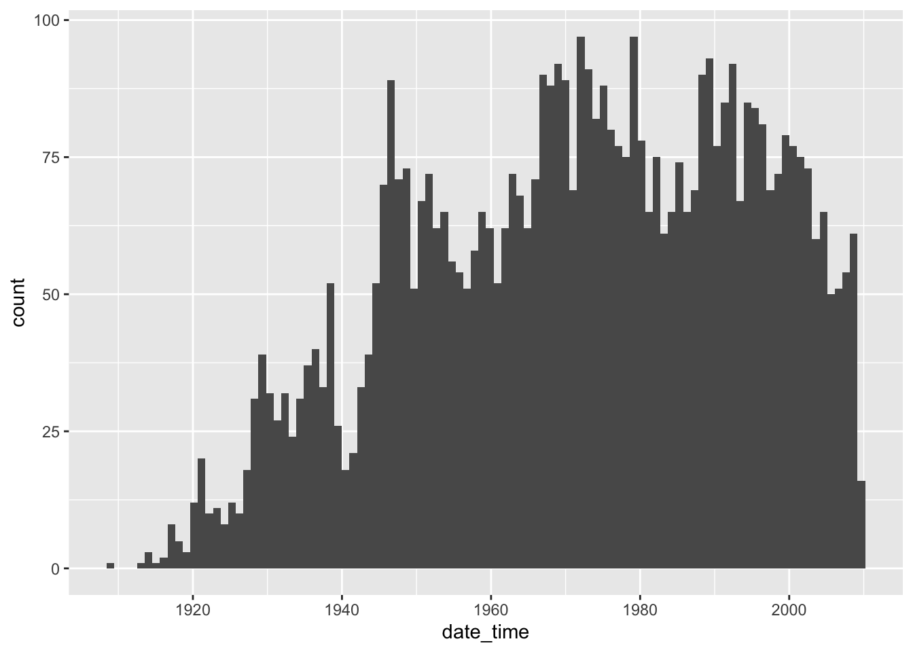

1 Compound Poisson Processes
In this chapter, we consider a stochastic process \(X(t)\) which is not necessarily a counting process. We say \(X(t)\) is a compound Poisson process if [ X(t) = _{i = 1}^{N(t)} Y_i ] where \(N(t)\) is a Poisson process with rate \(\lambda\) and \(Y_1, \ldots\) are independent, identically distributed random variables, which are also independent of \(N(t)\).
Example 1.1 (BSC enterings) If you let \(X(t)\) denote the number of people who enter Busch Student Center at or before time \(t\), then this may not be a Poisson process. If we count all of the people who enter as a group as entering at the same time, then we could possibly model it as a compound Poisson process, where the arrival times of groups is a Poisson process, and the number of people in the group is a separate random variable (that we would need to model).
Other examples given in the text include the number of people involved in car accidents at a certain intersection, the amount of money that visitors to a casino lose, and number of people entering a movie theater.
We can compute the mean and variance of a compound Poisson process as follows:
Theorem 1.1 (Mean and Variance of Compound Poisson Process) The mean \(E[X(t)] = \lambda t E[Y]\) and the variance is \({\mathrm{Var}}(X(t)) = \lambda t E[Y^2]\).
Let’s look at a simulation of a compound Poisson process in order to check these results via an example. We assume that \(N(t)\) is a Poisson process with rate 2, and \(Y_i\) are iid uniform random variables on the interval \([0, 1]\). From Theorem Theorem 1.1, we see that [ E[X(3)] = 2 = 3 ] and [ {}(X(t)) = 3 _0^1 x^2, dx = 2 ] We check this via a simulation. Note that we don’t need to know when the events occur exactly, only how many of them there are before time \(t = 3\). That is given by rpois(1, 6)`, as below.
That is how we simulate a single trial of the compound Poisson process. To do multiple trials, we put it inside of replicate.
sim_data <- replicate(10000, {
num_events <- rpois(1, lambda * t)
x_3 <- sum(runif(num_events))
})
mean(sim_data)[1] 2.983913var(sim_data)[1] 2.013984If you run the above code a few times, you will see that the mean and variance of the compound Poisson process are as predicted by Theorem Theorem 1.1.
1.1 Modeling a Compound Poisson Process
In this section, we are interested in the reverse problem: if we are given data, how do we estimate \(\lambda\) and the distribution of \(Y_1, \ldots, Y_{N(t)}\)? For our purposes, we will make some assumptions about what kind of random variable \(Y_1, \ldots, Y_n\) are and then use a goodness-of-fit test to see whether it is a reasonable fit to the data.
We start by modeling data that we know the true generative process of. This is so that we can see that out technique is working. In the next example, we will apply our technique to data that we don’t know the true generative process for.
1.1.1 Simulated data
We assume that \(N(t)\) is Poisson with rate 2, and that \(Y_1, \ldots, Y_{N(t)}\) are iid zero-truncated Poisson random variables with rate 3. Let’s imagine that this is the number of people entering a movie theater. For our simulated data, we are going to assume that we have collected data from time 0 to time 4, and we noted the time of arrival and the number of We create our simulated data as follows. The arrival times \(S_1, \ldots, S_{N(t)}\) say when the groups arrived to the theater, and the values \(Y_1, \ldots, Y_{N(t)}\) say how many people were in each group. We use zero-truncated Poisson because we are assuming that each \(Y_i > 0\).
lambda <- 2
t <- 4
num_events <- rpois(1, lambda * t)
time_of_events <- sort(runif(num_events, 0, t))
num_in_family <- actuar::rztpois(num_events, 3) #sampling from zero-truncated
data.frame(trial = 1,
time = time_of_events,
num_in_family = num_in_family) trial time num_in_family
1 1 0.4450966 4
2 1 0.9025954 3
3 1 1.4497908 2
4 1 1.5024359 3
5 1 2.4302417 4
6 1 2.9852284 2To create a large sample of this type, we use purrr::map_df.
First things first, let’s check whether every trial had at least one family arrive:
In order to estimate the rate of the Poisson process \(N(t)\), we recall that the expected value of \(N(4)\) is \(4\lambda\). We can estimate \(E[N(4)]\) from the data by counting the total number of occurrences by time 4, and dividing by the total number of trials. In other words,
nrow(sim_data)/300[1] 7.88Our estimate for trhe mean of \(N(4)\) is 7.88, so our estimate for \(\lambda\) is our previous estimate divided by 4; namely, 1.97. You should compare that to the true value of 2.
Now we turn to estimating the mean of the truncated Poisson process. The method of moments estimator for \(\lambda\), is given by [ = ] where \(\overline{x}\) is the sample mean. We compute the sample mean as follows:
mean(sim_data$num_in_family)[1] 3.136633and to solve for \(\hat \lambda\), well, that is a bit tricky, but we already know it is 3. Let’s just check:
3/(1 - exp(-3))[1] 3.157187Pretty good. If we want to solve for \(\hat \lambda\), we can use optimize:
optimize(f = function(lambda) {(lambda/(1 - exp(-lambda)) - mean(sim_data$num_in_family))^2 },
interval = c(0, 10))$minimum
[1] 2.976806
$objective
[1] 2.212965e-12Our estimate \(\hat \lambda\) is given by the value in $minimum. We can also check via a plot that it is about \(\hat \lambda = 3\).

1.1.2 Non-simulated data
We consider the airplane crash data from Kaggle. I imagine that airplane crashes are not a homogeneous Poisson process over the time frame of this data set (1908-present), because, well, that would just be too much to believe! Safety has improved (surely) but also the number of flights has increased, so it is not at all clear what to make of it. We’ll probably need to restrict down to a time interval where the rate of crashes is approximately constant.
library(tidyverse)
dd <- read.csv("data/airplane_crashes.csv") %>%
janitor::clean_names()
dd <- as_tibble(dd)
dd# A tibble: 5,268 × 14
index date time locat…¹ opera…² flight route type regis…³ cn_in aboard
<int> <chr> <chr> <chr> <chr> <chr> <chr> <chr> <chr> <chr> <dbl>
1 0 09/17/19… "17:… Fort M… Milita… "" "Dem… Wrig… "" "1" 2
2 1 07/12/19… "06:… Atlant… Milita… "" "Tes… Diri… "" "" 5
3 2 08/06/19… "" Victor… Private "-" "" Curt… "" "" 1
4 3 09/09/19… "18:… Over t… Milita… "" "" Zepp… "" "" 20
5 4 10/17/19… "10:… Near J… Milita… "" "" Zepp… "" "" 30
6 5 03/05/19… "01:… Tienen… Milita… "" "" Zepp… "" "" 41
7 6 09/03/19… "15:… Off Cu… Milita… "" "" Zepp… "" "" 19
8 7 07/28/19… "" Near J… Milita… "" "" Schu… "" "" 20
9 8 09/24/19… "01:… Biller… Milita… "" "" Zepp… "" "" 22
10 9 10/01/19… "23:… Potter… Milita… "" "" Zepp… "" "" 19
# … with 5,258 more rows, 3 more variables: fatalities <dbl>, ground <dbl>,
# summary <chr>, and abbreviated variable names ¹location, ²operator,
# ³registrationThe first thing I want to do is create a single date/time variable that encodes the time of the crash. To do so, we use the R package lubridate. If a crash doesn’t have an associated time, we just assume it happened at noon. I don’t think that will make a difference, but we will need to make sure our bins are not too small, in which case it would make a difference. Alternatively, I could’ve deleted those, but that seems like a lot of data to delete (42 percent!). One stil fails to parse (index 3267) because there is a typo in the time (114:20). Let’s assume they meant 14:20.
mean(dd$time == "")[1] 0.4212225OK, now let’s get a histogram of the number of accidents over time.
ggplot(dd, aes(x = date_time)) +
geom_histogram(bins = 100)
We can see that this is almost surely not a homogeneous Poisson process, but if we restrict to, say, 1990-2000 it might be. Let’s check it out.
aa <- dd %>%
filter(date_time > lubridate::mdy("12/31/1989") & date_time < lubridate::mdy("1/1/2001"))
ss <- hist(aa$date_time, breaks = 30)
When creating histograms, R sometimes tries to guess what the natural range of values is based on the observed range of values. For example, in this case, the histogram bins range from to 980000000, where the actual range of values (in seconds) is 6.312876^{8} to 9.765459^{8}. So, the first and the last bins are different sizes than the rest, and should have different probabilities associated with them. The histogram also changes the number of breaks to make a better looking plot. In this case, it made 36 bins!
To fix this, we provide explicit locations of breaks, in terms of seconds.
mindt <- min(as.numeric(aa$date_time))
maxdt <- max(as.numeric(aa$date_time))
ss <- hist(as.numeric(aa$date_time), breaks = seq(mindt - 1, maxdt + 1, length.out = 37))
This histogram looks quite different, even though it is the same number of breaks as the previous histogram.
Let’s check to see whether this passes a goodness-of-fit test for a homogeneous Poisson process. We estimate the rate in terms of accidents per year. Note that there are 11 years in the data. We need to be really careful with units here! The units in breaks are seconds and we computed the rate in terms of years! We also need to check the number of bins that hist makes; just because you tell it to do 30, for example, doesn’t mean that there will be exactly 30 bins!!
rate <- 851/11 #rate in accidents per yearWe now compute the expected and the observed number of accidents in each bin based on our estimate of the rate being round(rate, 2). The variable ss$counts contains the observed values in the bins, so we just need to compute the expected value. There are roughly 31557600 seconds in a year, so we divide the rate in accidents per year by that number to get accidents per second.
observed_accidents <- ss$counts
expected_accidents <- rate * (ss$breaks[2] - ss$breaks[1])/31557600
test_stat <- sum((observed_accidents - expected_accidents)^2/expected_accidents)
pchisq(test_stat, df = 35 - 1 - 1, lower.tail = F)[1] 0.3544935We fail to reject that airplane crashes are a homogeneous Poisson process. Let’s continue now with fatalities. That is surely not a homogeneous Poisson process, because it violates the assumption that multiple occurrences cannot happen at the same time. Let’s see what the distribution of fatalities looks like.
hist(aa$fatalities)
It is really right skew. Maybe Poisson? No, for Poisson the mean is equal to the variance and check out our data!
Many times when modeling a discrete rv with variance larger than the mean, we use negative binomial random variables. We choose the size and mu parameter to match the mean and variance of our data.
This cannot be correct! Negative binomial random variables usually can take on zero with high probability, while the number of fatalities in the plane crashes we observed were almost never zero. In subsequent notes, we will use a zero truncated negative binomial random variable, which also will not be a good fit, but at least it has a chance.